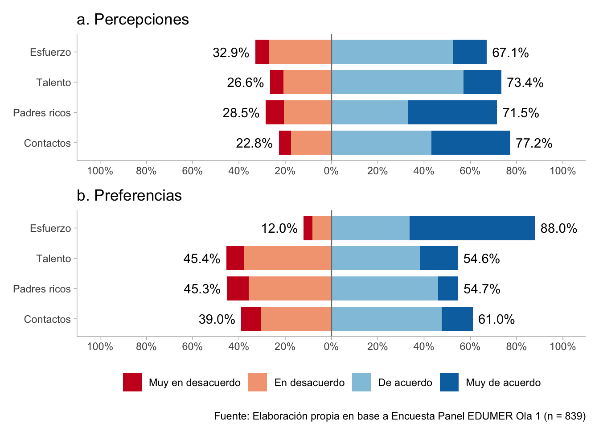
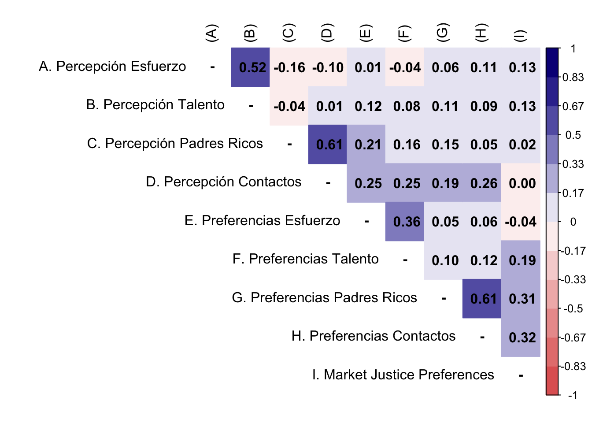

1 Librerías
2 Datos
3 Analísis
3.1 Descriptivos
t1 <- db_long %>%
filter(ola == 1) %>%
select(-c(1:3)) %>%
skim() %>%
yank("numeric") %>%
as_tibble() %>%
mutate(range = paste0("(",p0,"-",p100,")")) %>%
mutate_if(.predicate = is.numeric, .funs = ~ round(.,2)) %>%
select("Variable" = skim_variable,"Mean"= mean, "SD"=sd, "Range" = range, "Histogram"=hist)
t1 %>%
kableExtra::kable(format = "markdown")| Variable | Mean | SD | Range | Histogram |
|---|---|---|---|---|
| perc_effort | 2.76 | 0.77 | (1-4) | ▁▅▁▇▂ |
| perc_talent | 2.84 | 0.76 | (1-4) | ▁▃▁▇▂ |
| perc_rich_parents | 3.02 | 0.95 | (1-4) | ▂▅▁▇▇ |
| perc_contact | 3.06 | 0.85 | (1-4) | ▁▃▁▇▆ |
| pref_effort | 3.38 | 0.79 | (1-4) | ▁▁▁▅▇ |
| pref_talent | 2.63 | 0.84 | (1-4) | ▂▇▁▇▃ |
| pref_rich_parents | 2.54 | 0.78 | (1-4) | ▂▆▁▇▂ |
| pref_contact | 2.66 | 0.81 | (1-4) | ▂▅▁▇▂ |
| just_educ | 2.28 | 0.89 | (1-4) | ▅▇▁▆▂ |
| just_health | 2.00 | 0.94 | (1-4) | ▇▇▁▅▂ |
| just_pension | 2.05 | 0.87 | (1-4) | ▆▇▁▅▁ |
| mjp | 2.11 | 0.75 | (1-4) | ▆▇▆▃▁ |
theme_set(theme_ggdist())
colors <- RColorBrewer::brewer.pal(n = 4, name = "RdBu")
a <- db_long %>%
filter(ola == 1) %>%
select(starts_with("perc")) %>%
sjPlot::plot_likert(geom.colors = colors,
title = c("a. Percepciones"),
geom.size = 0.8,
axis.labels = c("Esfuerzo", "Talento", "Padres ricos", "Contactos"),
catcount = 4,
values = "sum.outside",
reverse.colors = F,
reverse.scale = T,
show.n = FALSE,
show.prc.sign = T
) +
ggplot2::theme(legend.position = "none")
b <- db_long %>%
filter(ola == 1) %>%
select(starts_with("pref")) %>%
sjPlot::plot_likert(geom.colors = colors,
title = c("b. Preferencias"),
geom.size = 0.8,
axis.labels = c("Esfuerzo", "Talento", "Padres ricos", "Contactos"),
catcount = 4,
values = "sum.outside",
reverse.colors = F,
reverse.scale = T,
show.n = FALSE,
show.prc.sign = T
) +
ggplot2::theme(legend.position = "bottom")
likerplot <- a / b + plot_annotation(caption = paste0("Fuente: Elaboración propia en base a Encuesta Panel EDUMER Ola 1"," (n = ",dim(db_long[db_long$ola==1,])[1],")"
))
likerplot

3.2 Bivariados
M <- psych::polychoric(db_long[db_long$ola==1,][c(4:11,15)])
P <- cor(db_long[db_long$ola==1,][c(4:11,15)], method = "pearson")
diag(M$rho) <- NA
diag(P) <- NA
M$rho[9,] <- P[9,]
rownames(M$rho) <- c("A. Percepción Esfuerzo",
"B. Percepción Talento",
"C. Percepción Padres Ricos",
"D. Percepción Contactos",
"E. Preferencias Esfuerzo",
"F. Preferencias Talento",
"G. Preferencias Padres Ricos",
"H. Preferencias Contactos",
"I. Market Justice Preferences")
#set Column names of the matrix
colnames(M$rho) <-c("(A)", "(B)","(C)","(D)","(E)","(F)","(G)",
"(H)","(I)")
rownames(P) <- c("A. Percepción Esfuerzo",
"B. Percepción Talento",
"C. Percepción Padres Ricos",
"D. Percepción Contactos",
"E. Preferencias Esfuerzo",
"F. Preferencias Talento",
"G. Preferencias Padres Ricos",
"H. Preferencias Contactos",
"I. Market Justice Preferences")
#set Column names of the matrix
colnames(P) <-c("(A)", "(B)","(C)","(D)","(E)","(F)","(G)",
"(H)","(I)")
testp <- cor.mtest(M$rho, conf.level = 0.95)
#Plot the matrix using corrplot
corrplot::corrplot(M$rho,
method = "color",
addCoef.col = "black",
type = "upper",
tl.col = "black",
col = colorRampPalette(c("#E16462", "white", "#0D0887"))(12),
bg = "white",
na.label = "-")

3.3 Multivariados
3.3.1 CFA
# model
model_cfa <- '
perc_merit = ~ perc_effort + perc_talent
perc_nmerit = ~ perc_rich_parents + perc_contact
pref_merit = ~ pref_effort + pref_talent
pref_nmerit = ~ pref_rich_parents + pref_contact
'
# estimation for each order set
m1_cfa <- cfa(model = model_cfa,
data = subset(db_long, ola == 1),
estimator = "DWLS",
ordered = T,
std.lv = F)
m2_cfa <- cfa(model = model_cfa,
data = subset(db_long, ola == 2),
estimator = "DWLS",
ordered = T,
std.lv = F)
summary(m1_cfa, fit.measures = T, standardized = T); summary(m2_cfa, fit.measures = T, standardized = T) lavaan 0.6.15 ended normally after 43 iterations
Estimator DWLS
Optimization method NLMINB
Number of model parameters 38
Number of observations 839
Model Test User Model:
Test statistic 39.183
Degrees of freedom 14
P-value (Chi-square) 0.000
Model Test Baseline Model:
Test statistic 2412.306
Degrees of freedom 28
P-value 0.000
User Model versus Baseline Model:
Comparative Fit Index (CFI) 0.989
Tucker-Lewis Index (TLI) 0.979
Root Mean Square Error of Approximation:
RMSEA 0.046
90 Percent confidence interval - lower 0.030
90 Percent confidence interval - upper 0.064
P-value H_0: RMSEA <= 0.050 0.608
P-value H_0: RMSEA >= 0.080 0.001
Standardized Root Mean Square Residual:
SRMR 0.038
Parameter Estimates:
Standard errors Standard
Information Expected
Information saturated (h1) model Unstructured
Latent Variables:
Estimate Std.Err z-value P(>|z|) Std.lv Std.all
perc_merit =~
perc_effort 1.000 0.843 0.843
perc_talent 0.734 0.225 3.258 0.001 0.619 0.619
perc_nmerit =~
perc_rch_prnts 1.000 0.645 0.645
perc_contact 1.465 0.200 7.318 0.000 0.944 0.944
pref_merit =~
pref_effort 1.000 0.609 0.609
pref_talent 0.967 0.153 6.305 0.000 0.589 0.589
pref_nmerit =~
pref_rch_prnts 1.000 0.747 0.747
pref_contact 1.101 0.183 6.013 0.000 0.822 0.822
Covariances:
Estimate Std.Err z-value P(>|z|) Std.lv Std.all
perc_merit ~~
perc_nmerit -0.071 0.019 -3.767 0.000 -0.131 -0.131
pref_merit 0.034 0.022 1.509 0.131 0.065 0.065
pref_nmerit 0.100 0.024 4.099 0.000 0.158 0.158
perc_nmerit ~~
pref_merit 0.179 0.027 6.559 0.000 0.455 0.455
pref_nmerit 0.132 0.022 5.952 0.000 0.273 0.273
pref_merit ~~
pref_nmerit 0.083 0.021 3.912 0.000 0.183 0.183
Intercepts:
Estimate Std.Err z-value P(>|z|) Std.lv Std.all
.perc_effort 0.000 0.000 0.000
.perc_talent 0.000 0.000 0.000
.perc_rch_prnts 0.000 0.000 0.000
.perc_contact 0.000 0.000 0.000
.pref_effort 0.000 0.000 0.000
.pref_talent 0.000 0.000 0.000
.pref_rch_prnts 0.000 0.000 0.000
.pref_contact 0.000 0.000 0.000
perc_merit 0.000 0.000 0.000
perc_nmerit 0.000 0.000 0.000
pref_merit 0.000 0.000 0.000
pref_nmerit 0.000 0.000 0.000
Thresholds:
Estimate Std.Err z-value P(>|z|) Std.lv Std.all
perc_effort|t1 -1.558 0.069 -22.577 0.000 -1.558 -1.558
perc_effort|t2 -0.443 0.045 -9.867 0.000 -0.443 -0.443
perc_effort|t3 1.051 0.053 19.752 0.000 1.051 1.051
perc_talent|t1 -1.568 0.069 -22.580 0.000 -1.568 -1.568
perc_talent|t2 -0.626 0.047 -13.448 0.000 -0.626 -0.626
perc_talent|t3 0.976 0.052 18.884 0.000 0.976 0.976
prc_rch_prnt|1 -1.406 0.063 -22.292 0.000 -1.406 -1.406
prc_rch_prnt|2 -0.568 0.046 -12.375 0.000 -0.568 -0.568
prc_rch_prnt|3 0.299 0.044 6.787 0.000 0.299 0.299
perc_contct|t1 -1.622 0.072 -22.559 0.000 -1.622 -1.622
perc_contct|t2 -0.747 0.048 -15.561 0.000 -0.747 -0.747
perc_contct|t3 0.410 0.045 9.185 0.000 0.410 0.410
pref_effort|t1 -1.773 0.080 -22.210 0.000 -1.773 -1.773
pref_effort|t2 -1.173 0.056 -20.922 0.000 -1.173 -1.173
pref_effort|t3 -0.103 0.043 -2.380 0.017 -0.103 -0.103
pref_talent|t1 -1.431 0.064 -22.370 0.000 -1.431 -1.431
pref_talent|t2 -0.115 0.043 -2.656 0.008 -0.115 -0.115
pref_talent|t3 0.981 0.052 18.944 0.000 0.981 0.981
prf_rch_prnt|1 -1.309 0.060 -21.858 0.000 -1.309 -1.309
prf_rch_prnt|2 -0.118 0.043 -2.725 0.006 -0.118 -0.118
prf_rch_prnt|3 1.359 0.061 22.110 0.000 1.359 1.359
pref_contct|t1 -1.382 0.062 -22.205 0.000 -1.382 -1.382
pref_contct|t2 -0.280 0.044 -6.375 0.000 -0.280 -0.280
pref_contct|t3 1.110 0.055 20.356 0.000 1.110 1.110
Variances:
Estimate Std.Err z-value P(>|z|) Std.lv Std.all
.perc_effort 0.290 0.290 0.290
.perc_talent 0.617 0.617 0.617
.perc_rch_prnts 0.584 0.584 0.584
.perc_contact 0.108 0.108 0.108
.pref_effort 0.629 0.629 0.629
.pref_talent 0.654 0.654 0.654
.pref_rch_prnts 0.442 0.442 0.442
.pref_contact 0.324 0.324 0.324
perc_merit 0.710 0.221 3.219 0.001 1.000 1.000
perc_nmerit 0.416 0.059 7.026 0.000 1.000 1.000
pref_merit 0.371 0.068 5.425 0.000 1.000 1.000
pref_nmerit 0.558 0.095 5.895 0.000 1.000 1.000
Scales y*:
Estimate Std.Err z-value P(>|z|) Std.lv Std.all
perc_effort 1.000 1.000 1.000
perc_talent 1.000 1.000 1.000
perc_rch_prnts 1.000 1.000 1.000
perc_contact 1.000 1.000 1.000
pref_effort 1.000 1.000 1.000
pref_talent 1.000 1.000 1.000
pref_rch_prnts 1.000 1.000 1.000
pref_contact 1.000 1.000 1.000lavaan 0.6.15 ended normally after 41 iterations
Estimator DWLS
Optimization method NLMINB
Number of model parameters 38
Number of observations 659
Model Test User Model:
Test statistic 50.445
Degrees of freedom 14
P-value (Chi-square) 0.000
Model Test Baseline Model:
Test statistic 2160.796
Degrees of freedom 28
P-value 0.000
User Model versus Baseline Model:
Comparative Fit Index (CFI) 0.983
Tucker-Lewis Index (TLI) 0.966
Root Mean Square Error of Approximation:
RMSEA 0.063
90 Percent confidence interval - lower 0.045
90 Percent confidence interval - upper 0.082
P-value H_0: RMSEA <= 0.050 0.116
P-value H_0: RMSEA >= 0.080 0.072
Standardized Root Mean Square Residual:
SRMR 0.050
Parameter Estimates:
Standard errors Standard
Information Expected
Information saturated (h1) model Unstructured
Latent Variables:
Estimate Std.Err z-value P(>|z|) Std.lv Std.all
perc_merit =~
perc_effort 1.000 0.873 0.873
perc_talent 0.755 0.143 5.297 0.000 0.659 0.659
perc_nmerit =~
perc_rch_prnts 1.000 0.821 0.821
perc_contact 0.992 0.143 6.920 0.000 0.815 0.815
pref_merit =~
pref_effort 1.000 0.671 0.671
pref_talent 0.622 0.123 5.039 0.000 0.418 0.418
pref_nmerit =~
pref_rch_prnts 1.000 0.720 0.720
pref_contact 1.132 0.424 2.672 0.008 0.815 0.815
Covariances:
Estimate Std.Err z-value P(>|z|) Std.lv Std.all
perc_merit ~~
perc_nmerit -0.213 0.030 -7.015 0.000 -0.298 -0.298
pref_merit 0.154 0.031 5.023 0.000 0.262 0.262
pref_nmerit 0.073 0.026 2.798 0.005 0.117 0.117
perc_nmerit ~~
pref_merit 0.257 0.036 7.153 0.000 0.466 0.466
pref_nmerit 0.081 0.027 2.958 0.003 0.136 0.136
pref_merit ~~
pref_nmerit 0.015 0.025 0.617 0.538 0.032 0.032
Intercepts:
Estimate Std.Err z-value P(>|z|) Std.lv Std.all
.perc_effort 0.000 0.000 0.000
.perc_talent 0.000 0.000 0.000
.perc_rch_prnts 0.000 0.000 0.000
.perc_contact 0.000 0.000 0.000
.pref_effort 0.000 0.000 0.000
.pref_talent 0.000 0.000 0.000
.pref_rch_prnts 0.000 0.000 0.000
.pref_contact 0.000 0.000 0.000
perc_merit 0.000 0.000 0.000
perc_nmerit 0.000 0.000 0.000
pref_merit 0.000 0.000 0.000
pref_nmerit 0.000 0.000 0.000
Thresholds:
Estimate Std.Err z-value P(>|z|) Std.lv Std.all
perc_effort|t1 -1.334 0.068 -19.488 0.000 -1.334 -1.334
perc_effort|t2 -0.299 0.050 -6.024 0.000 -0.299 -0.299
perc_effort|t3 1.016 0.059 17.156 0.000 1.016 1.016
perc_talent|t1 -1.602 0.080 -20.002 0.000 -1.602 -1.602
perc_talent|t2 -0.523 0.051 -10.183 0.000 -0.523 -0.523
perc_talent|t3 0.931 0.057 16.218 0.000 0.931 0.931
prc_rch_prnt|1 -1.392 0.071 -19.710 0.000 -1.392 -1.392
prc_rch_prnt|2 -0.519 0.051 -10.107 0.000 -0.519 -0.519
prc_rch_prnt|3 0.260 0.049 5.249 0.000 0.260 0.260
perc_contct|t1 -1.740 0.088 -19.780 0.000 -1.740 -1.740
perc_contct|t2 -0.727 0.054 -13.496 0.000 -0.727 -0.727
perc_contct|t3 0.256 0.049 5.172 0.000 0.256 0.256
pref_effort|t1 -1.757 0.089 -19.730 0.000 -1.757 -1.757
pref_effort|t2 -1.191 0.064 -18.668 0.000 -1.191 -1.191
pref_effort|t3 -0.105 0.049 -2.141 0.032 -0.105 -0.105
pref_talent|t1 -1.630 0.082 -19.983 0.000 -1.630 -1.630
pref_talent|t2 0.010 0.049 0.195 0.846 0.010 0.010
pref_talent|t3 1.131 0.062 18.214 0.000 1.131 1.131
prf_rch_prnt|1 -1.230 0.065 -18.933 0.000 -1.230 -1.230
prf_rch_prnt|2 -0.070 0.049 -1.440 0.150 -0.070 -0.070
prf_rch_prnt|3 1.255 0.066 19.083 0.000 1.255 1.255
pref_contct|t1 -1.382 0.070 -19.676 0.000 -1.382 -1.382
pref_contct|t2 -0.232 0.049 -4.706 0.000 -0.232 -0.232
pref_contct|t3 1.096 0.061 17.915 0.000 1.096 1.096
Variances:
Estimate Std.Err z-value P(>|z|) Std.lv Std.all
.perc_effort 0.238 0.238 0.238
.perc_talent 0.565 0.565 0.565
.perc_rch_prnts 0.326 0.326 0.326
.perc_contact 0.336 0.336 0.336
.pref_effort 0.549 0.549 0.549
.pref_talent 0.826 0.826 0.826
.pref_rch_prnts 0.482 0.482 0.482
.pref_contact 0.336 0.336 0.336
perc_merit 0.762 0.148 5.160 0.000 1.000 1.000
perc_nmerit 0.674 0.100 6.712 0.000 1.000 1.000
pref_merit 0.451 0.109 4.119 0.000 1.000 1.000
pref_nmerit 0.518 0.195 2.655 0.008 1.000 1.000
Scales y*:
Estimate Std.Err z-value P(>|z|) Std.lv Std.all
perc_effort 1.000 1.000 1.000
perc_talent 1.000 1.000 1.000
perc_rch_prnts 1.000 1.000 1.000
perc_contact 1.000 1.000 1.000
pref_effort 1.000 1.000 1.000
pref_talent 1.000 1.000 1.000
pref_rch_prnts 1.000 1.000 1.000
pref_contact 1.000 1.000 1.000left_join(
standardizedsolution(m1_cfa) %>%
filter(op=="=~") %>%
select(lhs,rhs,loadings_w01=est.std,pvalue_w01=pvalue),
standardizedsolution(m2_cfa) %>%
filter(op=="=~") %>%
select(lhs,rhs,loadings_w02=est.std,pvalue_w02=pvalue)
) %>%
mutate(
across(
.cols = c(pvalue_w01, pvalue_w02),
.fns = ~ case_when(
. < 0.05 & . > 0.01 ~ "*",
. <= 0.01 ~ "**",
TRUE ~ "")
),
loadings_w01 = paste(round(loadings_w01, 3), pvalue_w01, sep = " "),
loadings_w02 = paste(round(loadings_w02, 3), pvalue_w02, sep = " "),
lhs = case_when(
lhs == "perc_merit" ~ "Percepción meritocrática",
lhs == "perc_nmerit" ~ "Percepción no meritocrática",
lhs == "pref_merit" ~ "Preferencia meritocrática",
lhs == "pref_nmerit" ~ "Preferencia no meritocrática"),
rhs = case_when(
rhs == "perc_effort" ~ "Percepción esfuerzo",
rhs == "perc_talent" ~ "Percepción talento",
rhs == "perc_rich_parents" ~ "Percepción padres ricos",
rhs == "perc_contact" ~ "Percepción contactos",
rhs == "pref_effort" ~ "Preferencia esfuerzo",
rhs == "pref_talent" ~ "Preferencia talento",
rhs == "pref_rich_parents" ~ "Preferencia padres ricos",
rhs == "pref_contact" ~ "Preferencia contactos"),
simbol = "=~"
) %>%
select(lhs, simbol, rhs, loadings_w01, loadings_w02) %>%
kableExtra::kable(format = "markdown",
booktabs= T,
escape = F,
align = 'c',
col.names = c("Factor", "", "Indicador", "Cargas Ola 1", "Cargas Ola 2"),
caption = "Cargas factoriales en ambas Olas") %>%
kableExtra::add_footnote(label = "** p<0.01, * p<0.5", notation = "none")| Factor | Indicador | Cargas Ola 1 | Cargas Ola 2 | |
|---|---|---|---|---|
| Percepción meritocrática | =~ | Percepción esfuerzo | 0.843 ** | 0.873 ** |
| Percepción meritocrática | =~ | Percepción talento | 0.619 ** | 0.659 ** |
| Percepción no meritocrática | =~ | Percepción padres ricos | 0.645 ** | 0.821 ** |
| Percepción no meritocrática | =~ | Percepción contactos | 0.944 ** | 0.815 ** |
| Preferencia meritocrática | =~ | Preferencia esfuerzo | 0.609 ** | 0.671 ** |
| Preferencia meritocrática | =~ | Preferencia talento | 0.589 ** | 0.418 ** |
| Preferencia no meritocrática | =~ | Preferencia padres ricos | 0.747 ** | 0.72 ** |
| Preferencia no meritocrática | =~ | Preferencia contactos | 0.822 ** | 0.815 ** |
Note: ^^ ** p<0.01, * p<0.5
3.3.2 SEM
## Especificar el modelo: medición y estructural
m_sem1 <- '
# Modelo medición
perc_merit = ~ perc_effort + perc_talent
perc_nmerit = ~ perc_rich_parents + perc_contact
pref_merit = ~ pref_effort + pref_talent
pref_nmerit = ~ pref_rich_parents + pref_contact
# Modelo estructural
mjp ~ perc_merit + perc_nmerit + pref_merit + pref_nmerit
'
## Ajustar modelo
f_sem1 <- sem(m_sem1, data = subset(db_long, ola == 1))
## Ver resultados completos
summary(f_sem1, fit.measures = T, standardized = T)lavaan 0.6.15 ended normally after 57 iterations
Estimator ML
Optimization method NLMINB
Number of model parameters 27
Number of observations 839
Model Test User Model:
Test statistic 74.990
Degrees of freedom 18
P-value (Chi-square) 0.000
Model Test Baseline Model:
Test statistic 1112.323
Degrees of freedom 36
P-value 0.000
User Model versus Baseline Model:
Comparative Fit Index (CFI) 0.947
Tucker-Lewis Index (TLI) 0.894
Loglikelihood and Information Criteria:
Loglikelihood user model (H0) -8610.421
Loglikelihood unrestricted model (H1) -8572.926
Akaike (AIC) 17274.842
Bayesian (BIC) 17402.612
Sample-size adjusted Bayesian (SABIC) 17316.868
Root Mean Square Error of Approximation:
RMSEA 0.061
90 Percent confidence interval - lower 0.047
90 Percent confidence interval - upper 0.076
P-value H_0: RMSEA <= 0.050 0.088
P-value H_0: RMSEA >= 0.080 0.018
Standardized Root Mean Square Residual:
SRMR 0.037
Parameter Estimates:
Standard errors Standard
Information Expected
Information saturated (h1) model Structured
Latent Variables:
Estimate Std.Err z-value P(>|z|) Std.lv Std.all
perc_merit =~
perc_effort 1.000 0.610 0.791
perc_talent 0.696 0.187 3.719 0.000 0.425 0.558
perc_nmerit =~
perc_rch_prnts 1.000 0.540 0.567
perc_contact 1.449 0.204 7.095 0.000 0.782 0.920
pref_merit =~
pref_effort 1.000 0.335 0.423
pref_talent 1.652 0.346 4.778 0.000 0.554 0.657
pref_nmerit =~
pref_rch_prnts 1.000 0.559 0.714
pref_contact 1.096 0.105 10.448 0.000 0.613 0.756
Regressions:
Estimate Std.Err z-value P(>|z|) Std.lv Std.all
mjp ~
perc_merit 0.120 0.057 2.104 0.035 0.073 0.098
perc_nmerit -0.235 0.065 -3.645 0.000 -0.127 -0.170
pref_merit 0.380 0.129 2.946 0.003 0.127 0.170
pref_nmerit 0.513 0.064 8.002 0.000 0.287 0.384
Covariances:
Estimate Std.Err z-value P(>|z|) Std.lv Std.all
perc_merit ~~
perc_nmerit -0.028 0.015 -1.824 0.068 -0.086 -0.086
pref_merit 0.003 0.012 0.216 0.829 0.013 0.013
pref_nmerit 0.053 0.018 2.985 0.003 0.154 0.154
perc_nmerit ~~
pref_merit 0.071 0.018 3.983 0.000 0.390 0.390
pref_nmerit 0.085 0.018 4.685 0.000 0.283 0.283
pref_merit ~~
pref_nmerit 0.033 0.012 2.686 0.007 0.178 0.178
Variances:
Estimate Std.Err z-value P(>|z|) Std.lv Std.all
.perc_effort 0.223 0.100 2.245 0.025 0.223 0.375
.perc_talent 0.399 0.052 7.713 0.000 0.399 0.689
.perc_rch_prnts 0.615 0.049 12.578 0.000 0.615 0.679
.perc_contact 0.111 0.081 1.360 0.174 0.111 0.153
.pref_effort 0.517 0.035 14.968 0.000 0.517 0.821
.pref_talent 0.405 0.067 6.012 0.000 0.405 0.569
.pref_rch_prnts 0.301 0.032 9.528 0.000 0.301 0.490
.pref_contact 0.282 0.036 7.783 0.000 0.282 0.429
.mjp 0.450 0.025 18.026 0.000 0.450 0.807
perc_merit 0.372 0.103 3.632 0.000 1.000 1.000
perc_nmerit 0.291 0.050 5.769 0.000 1.000 1.000
pref_merit 0.112 0.029 3.827 0.000 1.000 1.000
pref_nmerit 0.313 0.038 8.179 0.000 1.000 1.0003.3.3 Invarianza
| Model | χ^2 (df) | CFI | RMSEA (90 CI) | Δ χ^2 (Δ df) | Δ CFI | Δ RMSEA | Decision |
|---|---|---|---|---|---|---|---|
| Configural | 38.41 (20) | 0.990 | 0.04 (0.02-0.059) | ||||
| Weak | 50.98 (27) | 0.987 | 0.039 (0.022-0.055) | 12.569 (7) . | -0.003 | -0.001 | Accept |
| Strong | 142.21 (34) | 0.942 | 0.074 (0.062-0.087) | 91.228 (7) *** | -0.045 | 0.035 | Reject |
| Strict | 245.08 (48) | 0.894 | 0.084 (0.074-0.094) | 102.874 (14) *** | -0.048 | 0.010 | Reject |
N = 583